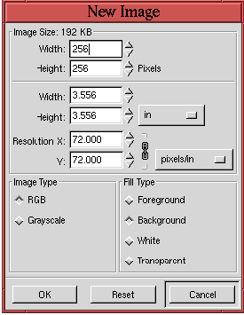

Next: 1.4 RGB, Grayscale, and
Up: 1. GIMP Basics
Previous: 1.2 Loading and Saving
1.3 Creating New Images
Figure 1.11
Figure 1.11:
Creating New Images
|  |
shows the New Image dialog. This is
invoked with the New function, found in the
Toolbox:File menu, or the Image:File menu, or by typing
C-n in the Toolbox or image windows. The most important aspect
of creating a new image is the specification of the Image Type, which
can be RGB or Grayscale, and the image
resolution. The
image resolution is set by entering values into the Resolution X and Y
entry boxes. The default values are 72 pixels per inch, which
corresponds, approximately, to your computer monitor's screen
resolution. If the final version of your image is to be output to a
high-resolution printer you should choose values corresponding to that
output device's capabilities.
Next: 1.4 RGB, Grayscale, and
Up: 1. GIMP Basics
Previous: 1.2 Loading and Saving
©2000 Gimp-Savvy.com